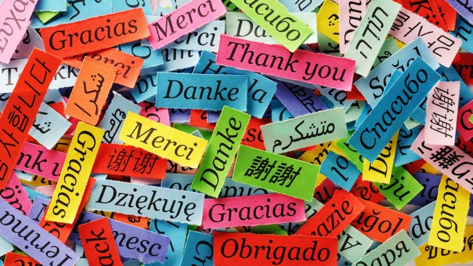
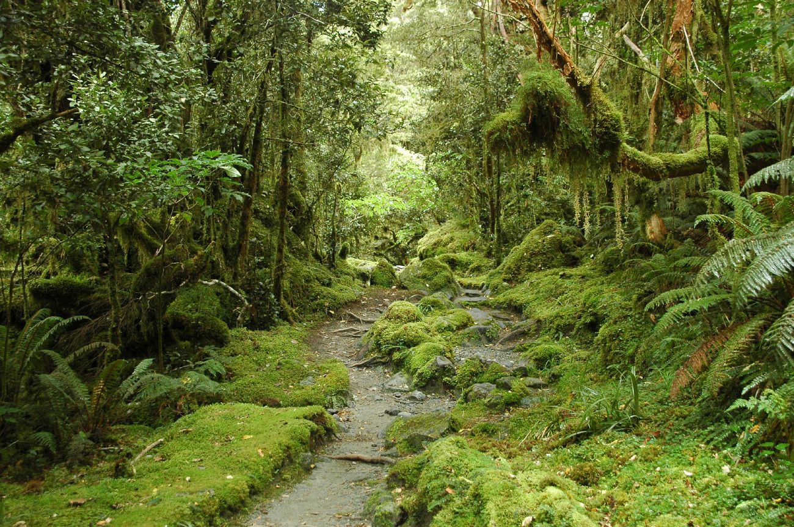
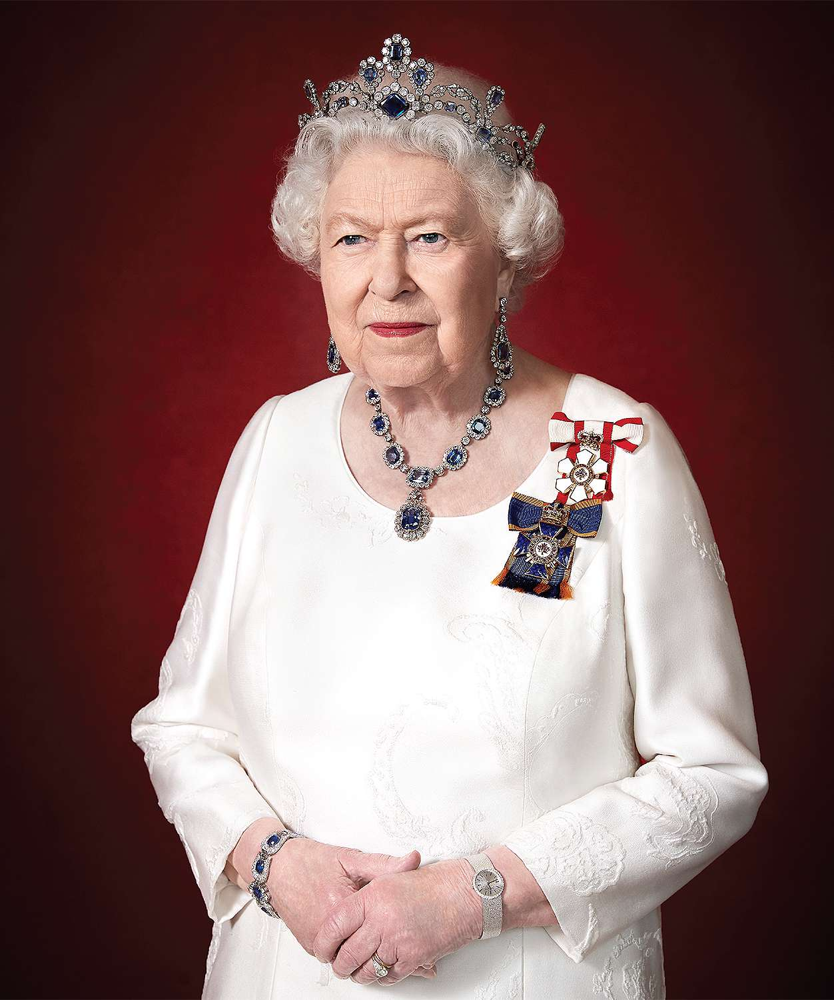

Você sabia que...
A Nova Zelândia foi o primeiro país a dar o direito de voto às mulheres
Essa é uma das curiosidades sobre a Nova Zelândia que mais orgulha o país. Foi no ano de 1893 que as mulheres neozelandesas passaram a ter o direito do voto. Na Austrália e na Noruega, o direito foi concedido em 1907, mas excluía homens e mulheres aborígines.
Ela tem três línguas oficiais
É natural se pensar que a língua oficial da Nova Zelândia é o inglês. Ela é, na verdade, uma das línguas oficiais do país, tendo em vista que há, no total, três: além da língua inglesa, o Maori (como língua nativa) e a Língua de Sinais. A mais falada delas é o inglês, claro, a mais amplamente difundida desde a colonização. Como a cultura maori tem raízes muito profundas na história local, o idioma do povo nativo é abordado como disciplina nas escolas de educação básica. Para estar ainda mais entre as curiosidades sobre a Nova Zelândia, no ano de 2006, a Língua de Sinais passou a se configurar também entre as línguas oficiais do país.
Florestas naturais
Mais de 25% da Nova Zelândia são verdes e naturais. Isso inclui dizer que o país dispõe de várias opções de reservas florestais e parques nacionais, nos quais a diversidade da flora é conservada.
Tinha a Rainha Elizabeth como sua chefe de Estado
Entre as curiosidades sobre a Nova Zelândia que muita gente não sabe é a monarquia constitucional da Nova Zelândia ter tido como Chefe de Estado titular a falecida rainha Elizabeth. Curioso, né? A ex-colônia inglesa não é, porém, o único exemplo. Canadá e Austrália também tinham a Rainha como autoridade simbólica máxima do país. E ela tinha representação da Governadora-Geral, Patsy Reddy, na democracia parlamentar independente neozelandesa.